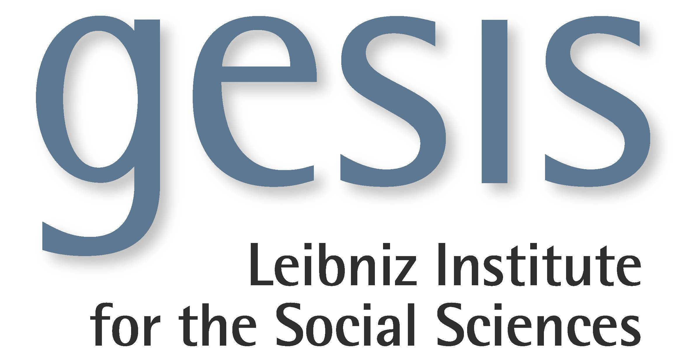

Social Sciences Track
To foster greater collaboration between Computer Science and the Social Sciences, and continue to encourage contribution from the latter domain to improve on 'Making Sense of Microposts', we have a special track dedicated to Social Science papers at #Microposts2015.

Topics of Interest
The special Social Sciences track at #Microposts2015 will focus on topics including, but not exclusive to, first:
- Collective awareness
- Education & citizen empowerment, data journalism
- Civil action, media & politics
- Political and polemical aspects of Microposts
- Ethics, legal and privacy issues
- Psychological profiles and psychological aspects of Micropost-based interactions
- Cultural, generational and regional differences in access and use
- Inequality in access and use of digital, social media
- Emerging social and communication dynamics resulting from Micropost-based services
Additionally, the topics for the main track include topics of interest to the Social Sciences community, regarding obtaining understanding about, discovering the knowledge content of, add application of Micropost data.

Award Sponsor: |
 |

Submissions:
- Full papers: 4 pages
- Extended abstracts and position papers: 2 pages
Further detail on the submissions page

Deadlines:
- Submission deadline: *07 Feb 2015*
- Acceptance notification: 25 Feb 2015
- Camera-ready (hard) deadline: 12 Mar 2015

Registration Info:
- Early bird registration: 1 Mar 2015
- Workshop - 18/19 May 2015 (open to all)
Further detail on the WWW'2015 site

Prize
A prize of € 250, generously sponsored by GESIS, will be awarded to the best submission. GESIS, the Leibniz Institute for the Social Sciences, is the largest service and infrastructure institution for the Social Sciences in Germany. By teaming up with GESIS to support the Social Sciences track, the #Microposts workshop organisers wish to highlight the role of interdisciplinary approaches for better understanding of the users behind social media and Microposts.

Track Chairs
Katrin Weller, GESIS Leibniz Institute for the Social Sciences, Germany
Danica Radovanović, University of Novi Sad, Serbia

Programme Committee
Tim Davies, University of Southampton, UKMunmun De Choudhury, Georgia Tech, USA
Fabio Giglietto, Università di Urbino Carlo Bo, Italy
Simon Hegelich Universität Siegen, Germany
Kim Holmberg, University of Turku, Finland
Athina Karatzogianni, University of Leicester, UK
Raquel Recuero, Universidade Católica de Pelotas, Brazil
Bianca C. Reisdorf, University of Leicester, UK
Luca Rossi, Università di Urbino Carlo Bo, Italy
Saskia Vanmanen, The Open University, UK
Alistair Willis, The Open University, UK
Taha Yasseri, Oxford Internet Institute, UK